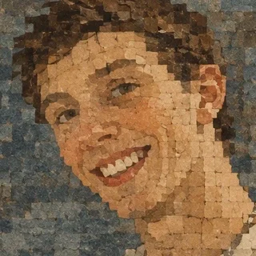

Connor Hood
AI Systems Engineer · Agentic Automation · ML Datasets
42connor@gmail.com linkedin.com/in/connor-m-hood github.com/42connor x.com/SocialAcolyte socialacolyte.github.io
Objective
Building agentic AI systems that do real work on live data — financial operations, scientific datasets and, next, robotics — with the production-floor habit of making every result repeatable and checkable.
In Practice
I build the systems that sit between messy real-world data and the models that have to work inside it — a connector that lets Claude read, reconcile and write the books of a whole property portfolio, a pipeline that turns tens of millions of rows of world agricultural data into national footprint accounts, and datasets that teach a machine to read hands moving. The production floor taught me what tolerance and repeatability actually mean, and the rule carries over: an AI system has to be right about the world, not just fluent about it.
Products
Monet Shot macOS screen recorder · Swift · open source 2026
- Menu-bar recorder that logs every click, zooms on them after the fact, draws its own smooth cursor and frames each take on a painting; blur and crop for anything private. Shipped on Homebrew (
brew install --cask monet-shot).
MCP servers MCP developer · dozens built 2025–present
- Servers that give Claude governed access to real systems: QuickBooks Enterprise for a 36-building portfolio (below), a health hub, voxel modelling, mail and messaging, Factorio and more.
StyleFeatures Library of living web components 2026
- 88 interactive pieces drawn from paintings, plates, water, cloth and stone, plus 18 demo sites and 10 personal sites built from them. Plain ES modules, no build step; every piece downloads as a folder.
AI Systems Engineering
PIP Inc. / SFRent, San Francisco AI Systems Engineer (contract) 2026–present
- Designed and built the QB Report Generator, an MCP server giving Claude live, governed access to QuickBooks Enterprise across 85+ company files behind a 36-building residential portfolio.
- Report engine producing 20+ recurring house-format accounting reports (P&L roll-ups, rent rolls, AR, cash, utilities, fixed assets) as PDF and Excel, validated against the accounting team’s own workbooks. One monthly report went from ~2 hours by hand to ~10 minutes and now runs on a schedule; the manual version was retired.
- AI bank reconciliation that writes back only when an account ties to zero — in one monthly run, 110 accounts processed and 44 reconciled and recorded in about 90 minutes.
- Governed write tools for payments, deposits, bills and journal entries: per-user approval codes, preview, full audit log and one-step undo. Used by the accounting team in San Francisco and India.
- Audit tooling that traces any figure back to its source transactions and flags edits to closed accounting periods across the portfolio for management review.
- Shipped features to the company’s Rails property-management platform: a QuickBooks reports console in production, emergency SMS alerts to resident managers, and sync endpoints between the platform and QuickBooks.
- Onboarded and trained 10+ staff, from accounting through senior finance leadership, onto Claude and the connector.
Global Footprint Network AI Data Pipeline Engineer · NFBA 2027 pilot 2026
- Built an AI-assisted ingestion and QA pipeline for the FAOSTAT inputs to the National Footprint and Biocapacity Accounts, loading ~31M rows (~42M across raw, intermediate and final layers) into GFN’s research database.
- Found and fixed country-reconciliation errors in the legacy processing code affecting ~5,000 rows, and flagged anomalous trade-data values for the science team.
- Handed over the code and a documented decision log for future annual production runs.
Evolve hackathon, 8090 Common Ground Nov 2026
- Second place.
ML Datasets & Software
- Personal work on large-scale ML datasets, including web-scraping and curating sets across varied numerical base systems, and language/action datasets (synchronous ASL hand-data video).
- Post-training data collection system operation and management (mocap).
- VLA (vision-language-action) model improvements with a focus on ‘lossy’ compound model behavior to improve performance for general robotics models.
- Extensive web development with React and Tailwind.
- AI-native development of landing/hero pages, backend database logic, query handling, concurrent operations and triage logic, and algorithm design.
Science & Technology Education
- Space Flight News — voice actor and co-founder, showcasing a passion for science, technology, and tech-focused education.
- Guest speaker and lecturer — psychology (2023) and technology & AI (2024) at the Venturer retreat.
Production, Manufacturing & Logistics Various sectors
Extensive experience in production, manufacturing, and warehouse work across key sectors.
- Biomedical — Thermo Fisher Scientific Mar–Oct
- Food & Beverage — Coopers Brewery 2022–2024, Haigh’s Chocolates 2024, Senector 2023
- Construction Supplies — BlueScope Steel 2021–2022
Education
- Flinders University — University preparatory program 2023
- Open Access College — High school graduation certificate 2022
Volunteering & Awards
Scouts SA Volunteer 2022–2025
- Queen Scout Award 2022
- Special Service Award 2025
- Certificate III in Business 2025
- Certificate III in Active Volunteering 2023
Other Notable Awards
- Rotary Youth Leadership Awards (RYLA) 2023
- National Volunteer Week recognition 2024